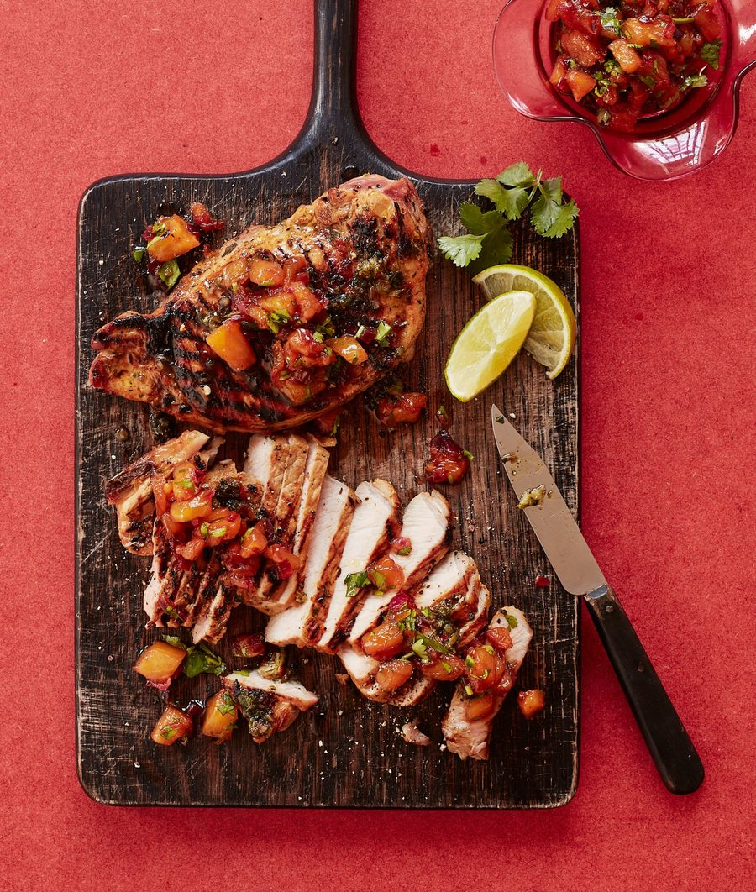

Grilled pork chops ‘fiorentina’ with maple and habanero, and pineapple salsa

Invest in chops from a rare-breed pig, marbled with delicious fat, and cut it into slices on a board at the table, much as you would a steak fiorentina.
For the pineapple
First make the marinade. Put the chilli, garlic, herbs, maple syrup and cumin seeds in a large mortar or small food processor and pound/blitz with a small teaspoon of salt. Once it’s a rough paste, work in the lime juice and oil, then rub two-thirds of the paste all over the pork chops; reserve the rest of the paste for the salsa, and wash your hands well to stop the chilli travelling.
Cut away the skin from the pineapple and cut the fruit lengthways into quarters. Remove the core from each quarter (keep the skin and core to make a shrub), then chop the flesh into small dice. Tip the flesh into a pan with the sugar, star anise, onion and lime zest, along with the reserved marinade, put it on a medium heat and leave to cook, stirring from time to time, for about 20 minutes, until the pineapple has broken down and resembles a rough relish. Add the lime juice and taste – the salsa should be aromatic and fresh – then stir in the coriander.
When you are ready to cook, heat a griddle or barbecue until smoking hot. Griddle the chops on their spines for four to five minutes, until the fat has caramelised a little, then griddle for a few minutes one each side depending on the thickness of the chops – I like them a little pink and juicy. Leave to rest somewhere warm for five to 10 minutes, then slice on a board and serve at the table with the salsa. A warm potato salad with coriander and pickled red onion, and some slaw would be delicious on the side.